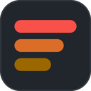
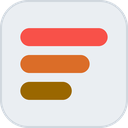

Shows the values of custom issue fields and the age of issues as badges on sub-issue lists and on project views, and keeps your pinned epics one click away.
This browser has not granted the extension access to github.com and api.github.com yet. Firefox asks for this separately from the installation.
Field values are read through the GitHub API. The token is stored in this browser profile only and is sent to nothing but api.github.com. Fields with "Organization only" visibility need a token of an organization member.
Recommended: a classic token with the repo scope. If the organization enforces SSO, open "Configure SSO" next to the new token and authorize it for that organization.
A fine-grained token also works: set the organization as resource owner, pick the repositories, and under Repository permissions set Issues to Read-only.
Names of the issue fields to display, matched case-insensitively against the fields defined by the organization. Badges appear in this order; single-select values use the option's colour.
Press Enter or , to add a field, Backspace or the × button to remove one. Leave it empty to show no field badges; the rest of the extension works without them.
Adds a badge with the time elapsed since the issue was created, next to the field badges, on sub-issue lists and on project table and board views.
The badge turns yellow past this age. 0 turns the highlight off. Default 90.
An issue younger than the unit reads today, this week or this month. Hovering the badge shows the exact age in months and days and the creation date.
Adds a List and Kanban toggle above the sub-issues list of an issue. The board reads every field the sub-issues carry, not only the ones above: you pick the field that forms the columns and the one that orders the cards inside each column, and both choices are remembered. Columns follow the order the organization gave the field's options. Filter the board down to one value of any dimension to see a single sprint or priority at a time, or hide the closed sub-issues with the checkbox in the toolbar.
Dragging writes to GitHub: it sets the field value, or closes and reopens the issue. The token needs write access to the issue's repository (the repo scope for classic tokens, Issues: Read and write for fine-grained ones). Nothing is written unless you drag a card.
Badges on the pull request list, next to the labels of each row. Everything comes from the same read-only API access as the field badges.
On an issue or pull request, a mark next to a username saying what that person already holds in the same organization. For deciding whether to assign someone one more thing.
Default 1. The mark reads like this:
Hovering the mark lists every issue that person holds, each with the pull request that closes it when there is one, and carries a refresh button for when the ten minute cache is behind. Your own name gets no mark. Counts cover the repositories your token can read, so a fine-grained token limited to a few repositories sees only those.
A small button between the issue and its sidebar hides the whole metadata column, assignees, labels, type, fields, projects and the rest, giving the issue body and the kanban board the full width. The button stays in the same place either way, and what you choose holds on every issue until you press it again.
Takes GitHub's own Projects box, with its status and fields, out of the sidebar on every issue, while the rest of the sidebar stays. The issue remains in its projects; only the box is hidden.
A pin button in GitHub's top bar, next to the notifications bell, opens a panel with your pinned issues, for example epics. From there you can copy the reference or make the issue you are looking at a sub-issue of a pinned epic. Linking writes to GitHub, so the token needs write access to the issue's repository (the repo scope for classic tokens, Issues: Read and write for fine-grained ones).
Type @gh and a space in the address bar, then a shortcut name and the words to look for, for example @gh repo flow. Each shortcut searches one kind of item and adds its qualifiers to your words, so org:acme keeps the search inside one organization. A shortcut name on its own, @gh pr, lists what its qualifiers match right away. Text that does not start with a shortcut name goes to the default shortcut. Results appear as you type; Enter on the text itself opens the GitHub search page.
Qualifiers use GitHub search syntax, for example org:acme is:open or repo:acme/webapp. Repository names inside an org: or user: also match on any part of the name, so app finds webapp. With one repo: qualifier, a number such as #1234 goes straight to that issue or pull request. The icon is optional, an emoji such as 📦 or 🔀, shown before each result of the shortcut: the browser puts the same magnifier in front of every suggestion and lets no extension change it.